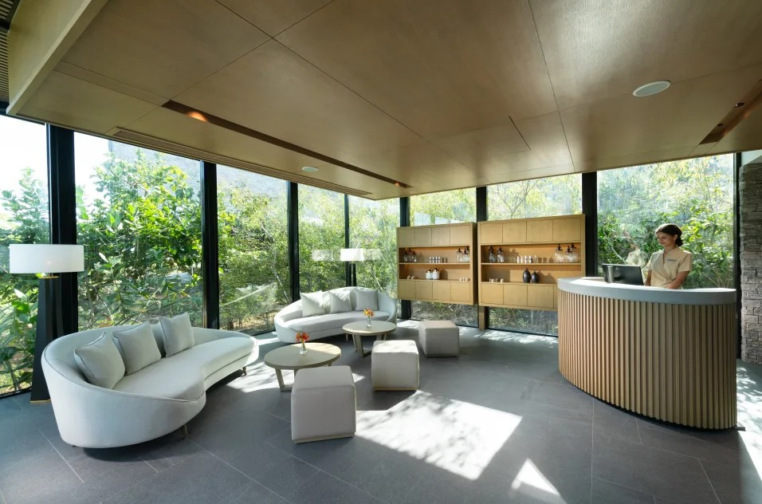
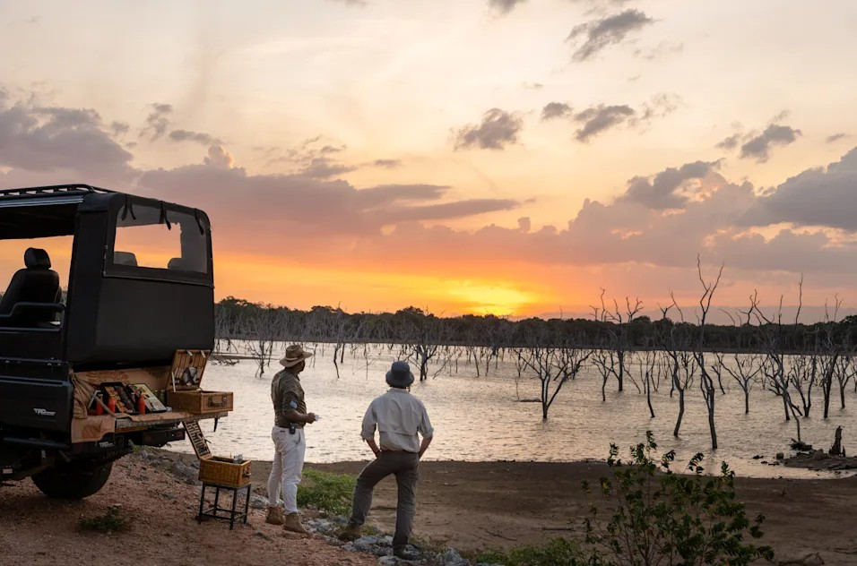
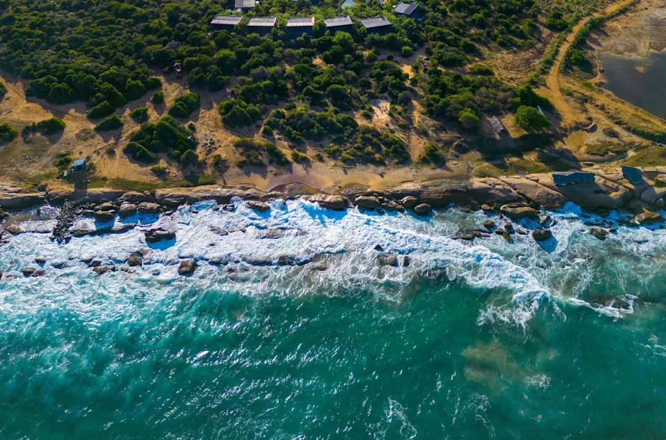

{kind=link}
{kind=link}

Hilton Hotel" and "Space Islands" redirect here. For the parent company, see Hilton Worldwide. For other uses,
see Space Island (disambiguation) and Hilton Hotel (disambiguation).
Hilton Hotels & Resorts (formerly known as Hilton Hotels) is a global brand of full-service hotels and
resorts and the flagship brand of American multinational hospitality company Hilton Worldwide.
The original company was founded by Conrad Hilton. As of December 30, 2019, 584 Hilton Hotels & Resorts properties with 216,379 rooms in 94 countries and territories are located across six continents.
This includes 61 properties that are owned or leased with 219,264 rooms, 272 that are managed with 119,612 rooms, and 251 that are franchised with 77,451 rooms.
In 2020, Fortune magazine ranked Hilton Hotels & Resorts at number one on their Fortune List of the Top 100 Companies to Work For in 2020 based on an employee survey of satisfaction.
Overview
Conrad Hilton founded the Hilton hotel chain in 1919, when he bought his first property, the Mobley Hotel, in Cisco, Texas.
The first hotel to feature the Hilton brand was the Dallas Hilton. In late 2010, Hilton announced a name change of the Hilton Hotels brand to Hilton Hotels & Resorts along with a new logo design, as part of a rebranding effort for the flagship brand.
,Hilton Hotels & Resorts is Hilton's flagship brand and one of the largest hotel brands in the world. The brand is targeted at both business and leisure travelers with locations in major city centers, near airports, convention centers,
and popular vacation destinations around the world.Hilton Hotels & Resorts participates in Hilton Honors,
Hilton's guest-loyalty program established in 1989. Members who book directly through Hilton-owned channels receive exclusive discounts and amenities such as free Wi-Fi, digital check-in, keyless entry, and the ability to use a mobile app to choose specific rooms.
In 2015, approximately 20 Hilton Hotels & Resorts properties were inducted into the Historic Hotels of America organization. Among these hotels were Hilton Fort Worth, which hosted John F. Kennedy's final speech, and Hilton Hawaiian Village Waikiki Beach Resort,
the setting of the film Blue Hawaii.
Amsterdam, Netherlands: John Lennon and Yoko Ono held their first Bed-In for Peace between March 25 and 31, 1969, at the Hilton Amsterdam, in Room 902 (renumbered to Room 702 during renovation). This room became a popular tourist destination.[28] Anaheim, United States: The Hilton Anaheim, located next to the Anaheim Convention Center, opened in time for the 1984 Summer Olympics. It is the largest hotel in Orange County. Antananarivo, Madagascar: The Madagascar Hilton, opened in 1970, has been described as the city's only "true" high-rise building. It left the chain in 2007 and is currently known as the Hotel Carlton Madagascar. Athens, Greece: The Hilton Athens opened in 1963 as the city's first international-branded hotel. The International Olympic Committee based themselves from the hotel during the 2004 Summer Olympics. The hotel closed in 2022 for renovations, with plans to rebrand it as a Conrad. Atlantic City, United States: The Atlantic Club Casino Hotel, the city's first and only locals casino, was managed by Hilton between 1996 and 2011. |  |
|
 |  |
Hilton Worldwide Holdings Inc. is an American multinational hospitality company that manages and franchises a broad portfolio of hotels, resorts, and timeshare properties.
Founded by Conrad Hilton in May 1919, the company is now led by Christopher J. Nassetta. Hilton is headquartered in Tysons, Virginia, United States.
As of December 31, 2023, the company's portfolio includes 7,530 properties (including timeshare properties) with 1,182,937 rooms in 118 countries and territories.
Hilton owns or leases 51 properties, manages 800 properties, and franchises out 6,679 properties to independent franchisees or companies.
Hilton has 22 brands across different market segments, including Conrad Hotels & Resorts, Canopy by Hilton, Curio, Hilton Hotels & Resorts, DoubleTree by Hilton, Embassy Suites by Hilton,
Hilton Garden Inn, Hampton by Hilton, Homewood Suites by Hilton, Home2 Suites by Hilton, Hilton Grand Vacations Club, Hilton Vacation Club, Hilton Club, LXR Hotels and Resorts by Hilton, Waldorf Astoria Hotels & Resorts,
Signia by Hilton, Tru by Hilton, Tapestry Collection by Hilton, Tempo by Hilton, Motto by Hilton, and Spark by Hilton.
On December 12, 2013, Hilton again became a public company, raising an estimated $2.35 billion in its second IPO.At the time, Blackstone Inc. held a 45.8 percent stake in the company.In October 2016,
China's HNA Group agreed to acquire a 25 percent equity interest in Hilton from Blackstone. The transaction was expected to close in the first quarter of 2017.
Hilton's largest stockholders were until mid-2018 HNA Group, Blackstone, and Wellington Management Company, which as of March 2017 owned 25%, 15.2%, and 6.7% of Hilton common stock respectively.
The company was founded by Conrad Hilton in 1919 as Hilton Hotels Corporation in Cisco, Texas, and it had its headquarters in Beverly Hills, California, from 1969 until 2009. In August 2009,
the company moved to Tysons Corner, unincorporated Fairfax County, Virginia, near McLean.
History
Foundation and early years
In 1919, Conrad Hilton purchased his first hotel, the 40-room Mobley Hotel in Cisco, Texas, and bought additional Texas hotels as the years passed.
In 1925, the Dallas Hilton became the first hotel to use the Hilton name. In 1927, Hilton expanded to Waco, Texas, where he opened the first hotel with air-conditioning in public areas and cold running water.
In 1943, Hilton assumed management of the Roosevelt Hotel and purchased the Plaza Hotel, both well-established high-end luxury hotels less than a mile apart in New York City's Midtown Manhattan neighborhood.
With this pair of acquisitions, Hilton established the first hospitality company to span the contiguous United States.
The company was incorporated in 1946 as the Hilton Hotels Corporation and subsequently began public trading of shares on the New York Stock Exchange. In 1947,
the Roosevelt Hotel became the first hotel in the world to have televisions in its rooms.
In 1947, Hilton assumed management of the Palacio Hilton hotel in Chihuahua, Mexico, which became the chain's first international property. That same year, they assumed management of four hotels on the island of Bermuda.[24]
Hilton International was founded as a wholly-owned subsidiary in 1948, just before the 1949 opening of the Caribe Hilton Hotel in Puerto Rico. Barman Ramon "Monchito" Marreno claimed he created the piña colada cocktail at this resort.
Hilton purchased The Waldorf-Astoria in New York in the same year.
Hilton in the 1950s - 1980s
The former Hilton Hotels Corporation headquarters in Beverly Hills, California
In 1953, Hilton opened its first hotel in Europe, the Castellana Hilton in Madrid, Spain.
The Hotels Statler Company was acquired in 1954 for $111 million in what was then the world's most expensive real estate transaction.
Hilton is credited with several early innovations. In 1954, Hilton created the world's first central reservations office, titled "HILCRON".
The reservations team in 1955 consisted of eight members on staff booking reservations for any of Hilton's then 28 hotels. Reservations agents used the "availability board" to track records.
The chalkboard measured 30 feet (9.1 m) by 6 feet (1.8 m) and allowed HILCRON to make over 6,000 reservations in 1955.
Bookings could be made for any Hilton via telephone, telegram, or Teletype. Later in 1955, Hilton launched a program to ensure every hotel room would include air conditioning.
Hilton is also credited with pioneering the airport hotel concept with the opening of the Hilton Inn at San Francisco International Airport in 1959.
International expansion continued in this era. In late 1955, Hilton opened the Istanbul Hilton, the first post–World War II property in Istanbul, Turkey.In 1957,
Hilton assumed management of its first hotel in Central America,
the El Panama Hilton in Panama City, Panama. In 1958, Hilton opened its first hotel in Canada, The Queen Elizabeth in Montreal, Quebec.In 1959,
Hilton opened its first hotel in Africa, the Nile Hilton in Cairo, Egypt.In 1960, Hilton opened its first hotel in Oceania, the Chevron Hilton in Sydney, Australia.[38] In 1961,
Hilton assumed management of its first hotel in South America, the Hotel Carrera in Santiago, Chile. In 1963, Hilton opened its first hotels in Asia, the Hong Kong Hilton and the Tokyo Hilton, and the Royal Tehran Hilton.[39]
In 1965, Hilton launched Lady Hilton, the first hotel concept created specifically for women guests. To appeal to female travelers,
many properties offered floors occupied by only women along with distinct amenities for their usage.
The iconic Hilton hotel logo, which features the stylized "H" in a circle, was created in 1969 by the legendary graphic designer Saul Bass.
Bass was also responsible for designing logos for other well-known brands, including AT&T, United Airlines, and the Girl Scouts of the USA.
Between 1970 and 1971, Hilton acquired the International Leisure Company, including the International Hotel and the Flamingo Hotel,
which were renamed the Las Vegas Hilton and the Flamingo Hilton.
The properties would become the first in the domestic gaming business to be listed on the NYSE.
In 1977, Hilton International opened its first property behind the "Iron Curtain" in Communist Europe, the Budapest Hilton.
In 1979, founder Conrad Hilton died at the age of 91. Hilton Hotels Corporation later created the Conrad Hotels brand in honor of Hilton.
Hilton Honors (formerly Hilton HHonors), the company's guest loyalty program, was initiated in 1987.
In 1994, the Honors surpassed competing hotel loyalty programs by offering members both hotel credit points and airline credit miles.
In 1998, Hilton spun off its gambling operations into a separate, publicly held company called Park Place Entertainment (later Caesars Entertainment, Inc. In 1999,
Hilton acquired Promus Hotel Corporation, which included the DoubleTree, Red Lion, Embassy Suites, Hampton Inn, and Homewood Suites brands.
| Home |
{kind=link}
{kind=link}